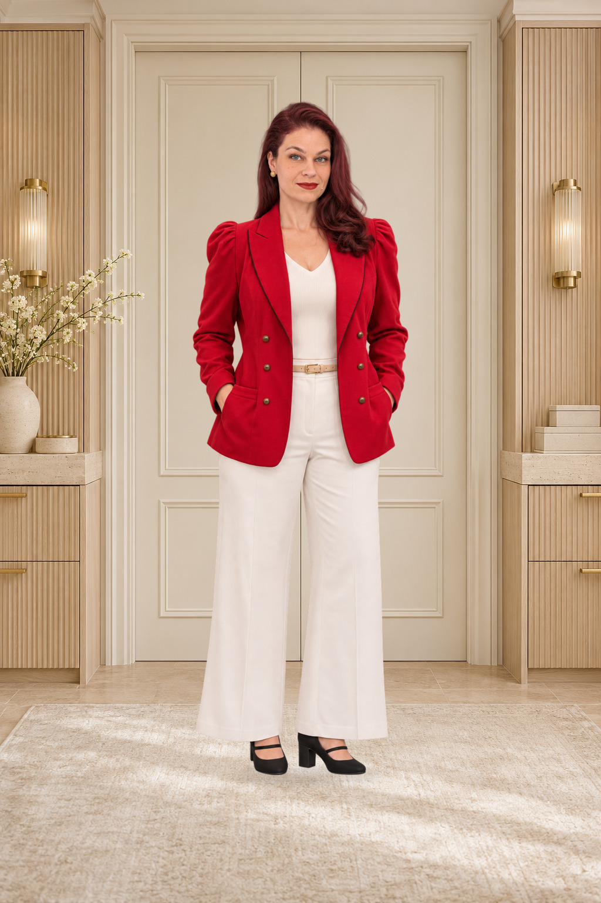
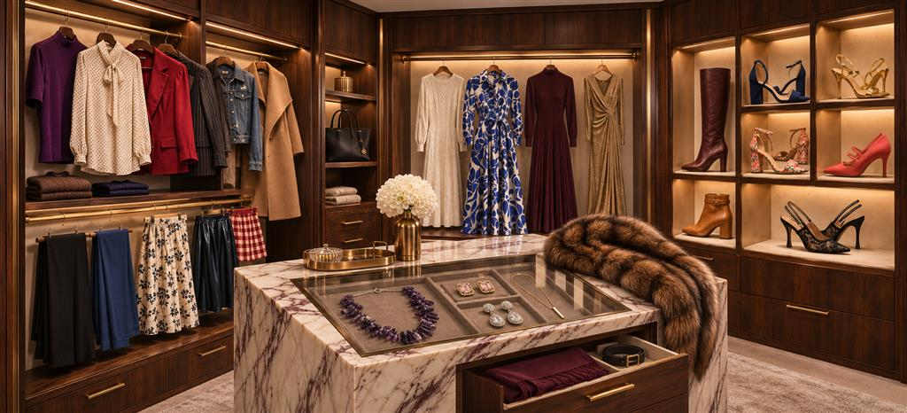
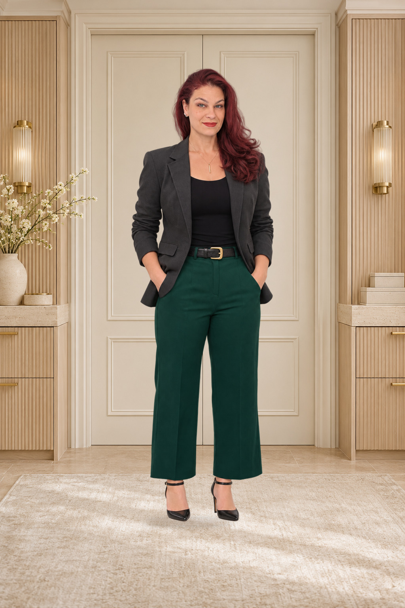
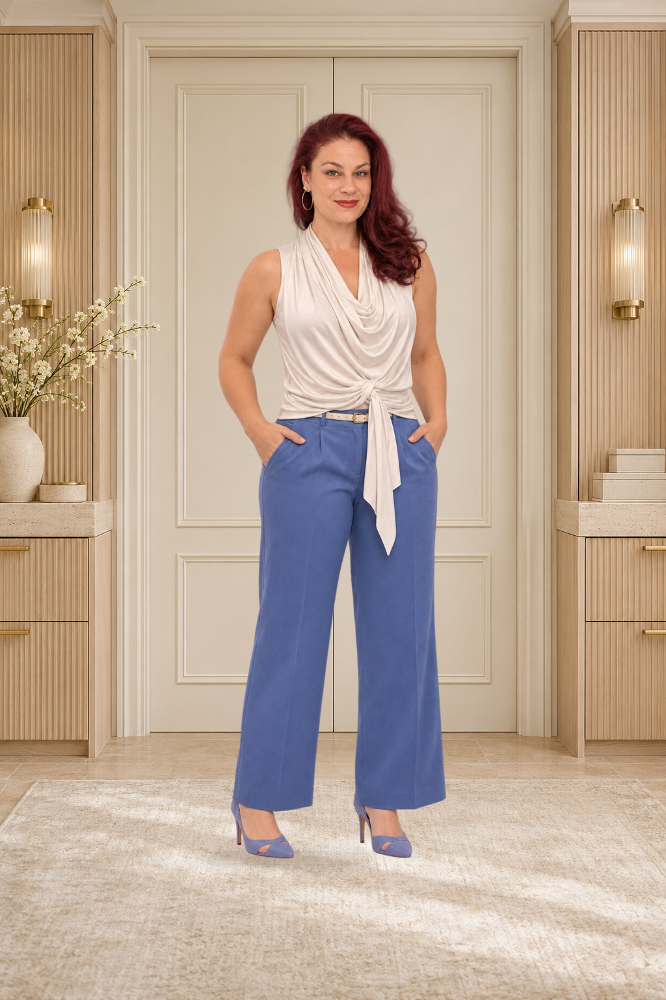
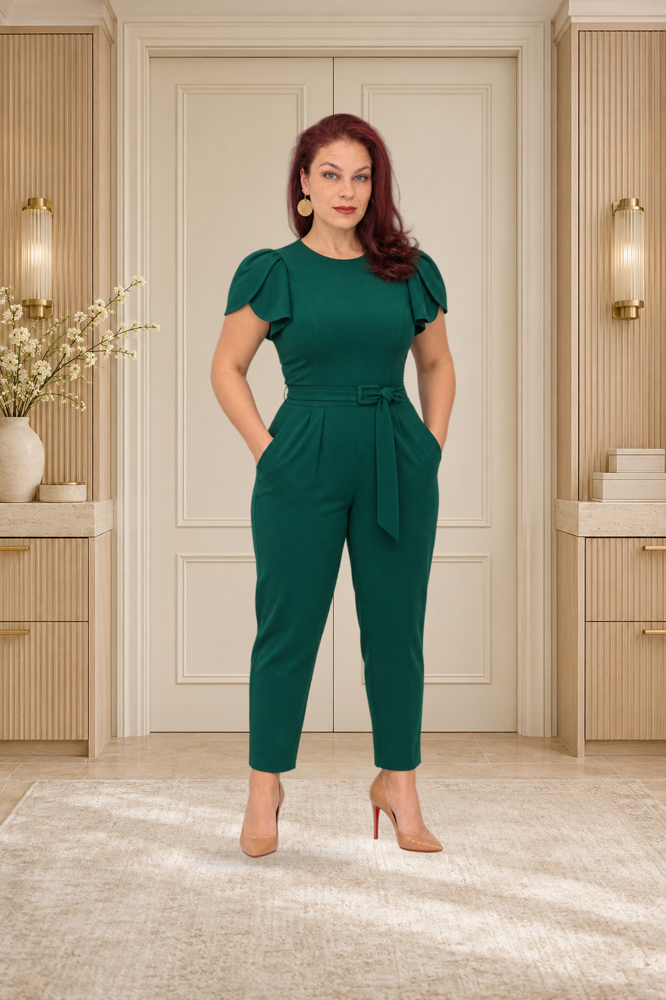
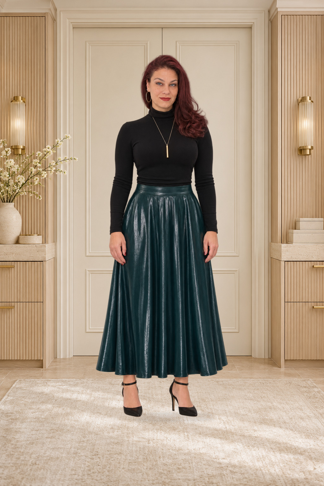

Red lapels over winter white
Keep the red jacket open over the light beige belt and let the trouser hems skim the pumps.
Six looks from my wardrobe, with the styling detail that pulls each one together.


Keep the red jacket open over the light beige belt and let the trouser hems skim the pumps.

Tuck the tank and leave the charcoal jacket open so the buckle shows.

Keep the front tie clear of the belt and leave the shoulders uncovered.

Tie the matching belt slightly to one side and leave the trouser hems unfolded so they finish just above the ankle.

Tuck the sweater at the shaped waistband and leave the smooth skirt front uninterrupted.

Keep the red jacket open over the white top and let the clean jean hems clear the heels.